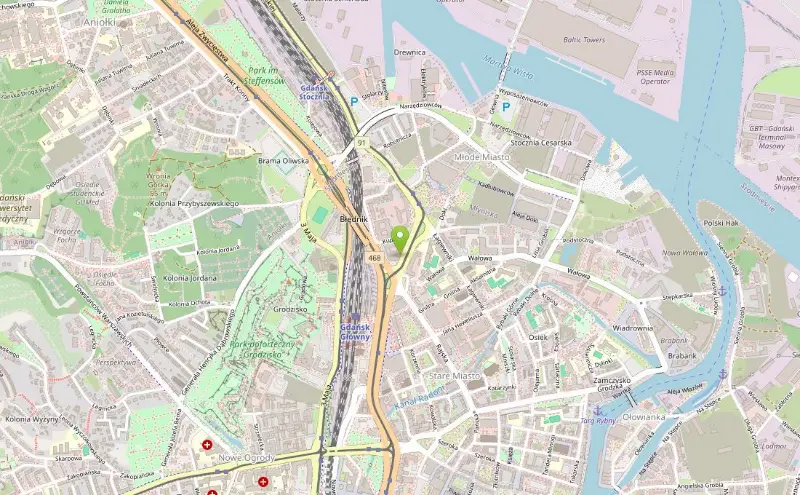

Kontakt z OSK Tailor
Zadzwoń, napisz albo wpadnij do biura w centrum Gdańska. Odpowiemy na pytania o kurs i pomożemy dobrać termin jazd.
E-mail: biuro@osktailor.pl
Biuro OSK Tailor
Zieleniak, V piętro ul. Wały Piastowskie 1, lok. 508D80-855 Gdańsk
Dworzec Główny 5 min
Jak do nas trafić

Pokaż mapę GoogleGodziny pracy biura
- Pn10–18
- Wt10–18
- Śr10–18
- Cz10–18
- Pt10–18
- Sbnieczynne
- Ndnieczynne
Przed wizytą zadzwoń lub napisz SMS, a zarezerwujemy dla Ciebie czas.
Gdzie zaczynają się jazdy
Przy ul. Rajskiej 14, na małym parkingu obok siedziby Solidarności. Od pierwszej jazdy jesteś w centrum, na trasach egzaminacyjnych.
Szkolimy kursantów ze Śródmieścia, Oruni, Chełmu, Wrzeszcza, Moreny, Zaspy, Przymorza, Oliwy i innych dzielnic Gdańska.
Napisz do nas
Masz pytanie o kurs, jazdy dodatkowe albo dokumenty? Zostaw wiadomość, a odpowiemy mailowo lub oddzwonimy.
Chcesz od razu zapisać się na kurs? Użyj formularza zapisu, w którym wybierzesz rodzaj kursu i godzinę kontaktu.
Dane do faktur i przelewów
- Firma
- MK Drift Michał Krawiec, właściciel marki OSK Tailor
- Adres
- ul. Antoniego Antczaka 7a, lok. 7, 80-041 Gdańsk
- NIP
- 5783086901
- REGON
- 525147544
- Nr ewidencyjny OSK
- 02002261
- Numer konta
- 23 1050 1764 1000 0090 8511 7126